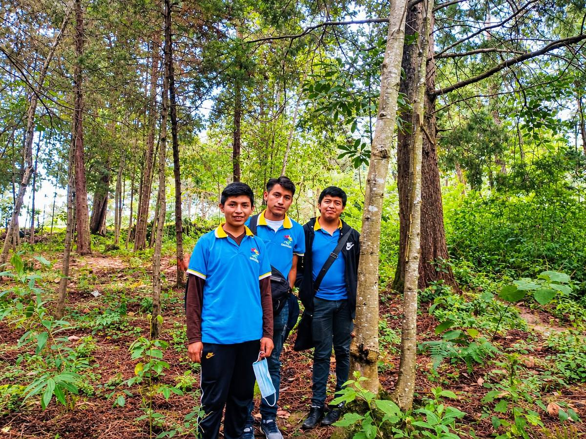

Club Extra
534 niños inscritos en 2026
Grupos de aprendizaje en la propia comunidad, con actividades educativas y tecnológicas basadas en el Método CREA+.
Conoce el programaTotonicapán, Guatemala· acompañando a la niñez del altiplano por décadas

Herramientas para aprender, también en la aldea.

Desde 2026, los niños de Club Extra aprenden con Chispa, un tutor de inteligencia artificial. Junto con los equipos de trabajo y las antenas de internet, permite que sigan aprendiendo en su propia comunidad.
La tecnología no reemplaza al maestro ni a la familia: despierta la curiosidad. Durante la pandemia, una computadora con contenidos sin internet permitió que un niño de cuarto primaria de Salitre de Conejo avanzara por su cuenta hasta los contenidos de sexto.
Lee la historia de JonathanChispa es un agente de inteligencia artificial que acompaña a niños y jóvenes con las materias de las escuelas guatemaltecas. Usa el método socrático: con preguntas, guía al estudiante para que él mismo llegue a la respuesta o resuelva el problema. Está limitado a temas escolares, para que sea una herramienta de estudio segura y enfocada.
Explica paso a paso un tema que el niño todavía no ha visto en clase.
Vuelve sobre los temas que costaron, al ritmo de cada estudiante.
No hace la tarea por el niño: le pregunta hasta que él encuentra la solución.
| Año | 2023 | 2024 | 2025 | 2026 |
|---|---|---|---|---|
| Equipos | 186 | 203 | 240 | 232 |
| Antenas de internet | 0 | 1 | 2 | 2 |

Nuestra meta es avanzar hacia que cada niño cuente con su propio equipo de trabajo. Cada aporte nos acerca a esa meta.
Apoyar este programa534 niños inscritos en 2026
Grupos de aprendizaje en la propia comunidad, con actividades educativas y tecnológicas basadas en el Método CREA+.
Conoce el programa
80 becados en 2026
Becas que permiten seguir estudiando desde preprimaria hasta la universidad o un curso técnico.
Conoce el programa
14 jóvenes completaron el programa
Retos empresariales durante 16 semanas para que cada joven dé el paso final hacia la universidad.
Conoce el programa
17 jóvenes sirviendo cada semana
De asistente a voluntario y de voluntario a facilitador: liderazgo que se aprende sirviendo.
Conoce el programa
Ellos ya tienen la curiosidad y las ganas. Tu apoyo les ayuda a seguir adelante, junto a su familia y su comunidad.